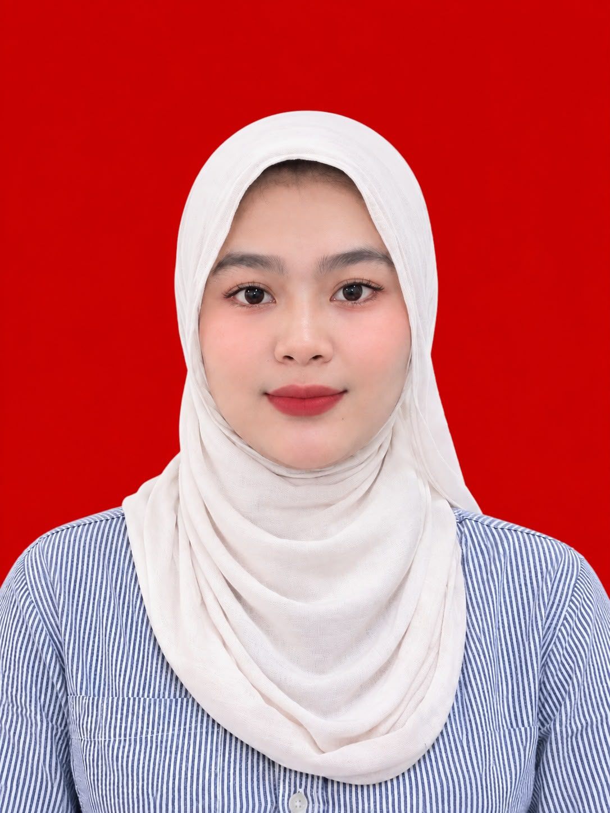

CURRICULUM VITAEMahasiswa Teknik Informatika |
|||||||
|
 PROFILNama: Tanggal Lahir: Jenis Kelamin: Email: No. Telepon: Alamat: KEAHLIAN
HOBI
|
TENTANG SAYASaya adalah mahasiswa Teknik Informatika yang memiliki semangat belajar tinggi, disiplin, bertanggung jawab, dan tertarik pada perkembangan teknologi informasi. Saya senang mempelajari hal baru serta mampu bekerja secara individu maupun tim. TUJUAN KARIERMemiliki keinginan untuk mengembangkan kemampuan di bidang teknologi informasi, menerapkan ilmu yang telah dipelajari, serta memperoleh pengalaman yang dapat menunjang perkembangan karier dan profesionalisme di masa depan. PENDIDIKAN
PENGALAMAN ORGANISASIMAKRAB Teknik UNUSIA KOPRI Rayon Teknik UNUSIA Berpartisipasi dalam kegiatan organisasi, meningkatkan kemampuan komunikasi, belajar bekerja sama, dan mengembangkan rasa tanggung jawab. PENGALAMAN KERJABelum memiliki pengalaman kerja formal. Siap belajar dan mengembangkan kemampuan. KARAKTER DIRI
|
||||||
|
Terima kasih telah membaca CV saya.
Ela Santia | Teknik Informatika |
|||||||